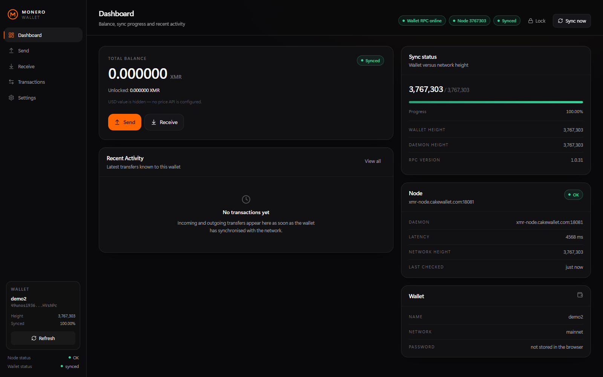
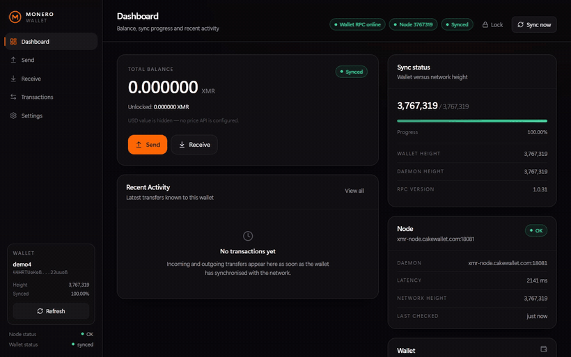
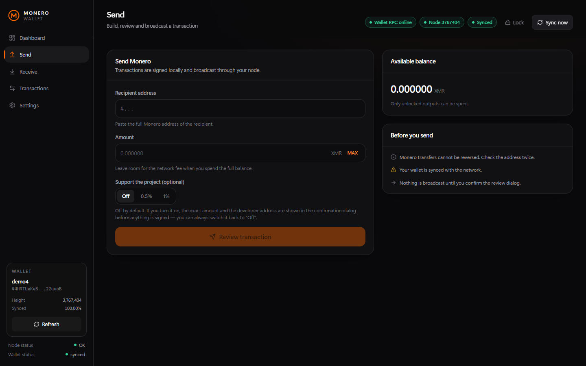
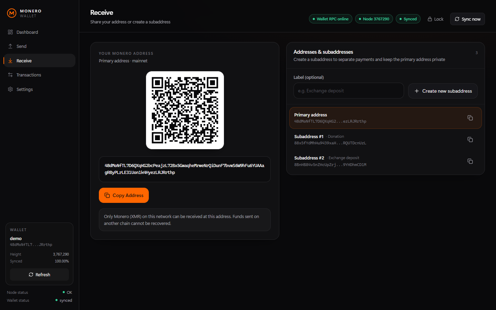
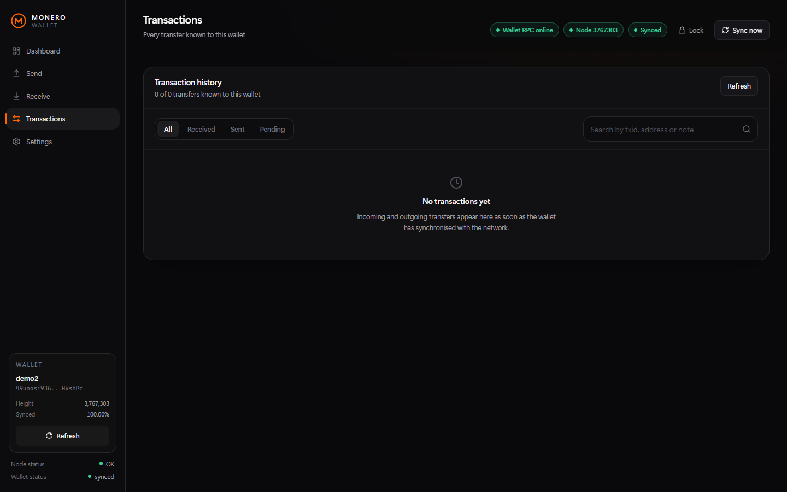
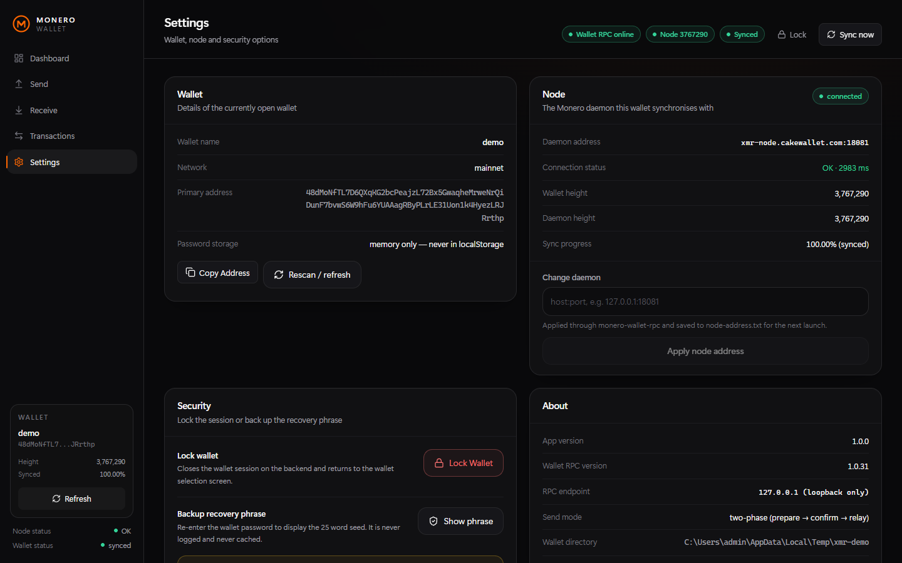

A dark, responsive web wallet for Monero (XMR) powered by the official monero-wallet-rpc. Everything runs on your own computer: your keys stay in your wallet file, your node stays your choice, and every payment is reviewed with its exact fee before it is broadcast. No accounts, no tracking, no third-party servers.

A real wallet interface on top of the official Monero binaries — not a mock-up and not a hosted service.
Total, unlocked and locked XMR, plus wallet height against network height with a live progress bar.
The transaction is built and signed locally, you review the exact network fee, and only then is it relayed to the network.
Received, sent, pending and failed transfers with confirmations, lock state, notes and a details dialog.
Create labeled subaddresses, switch between them, copy them and show a QR code for any of them.
See daemon status, latency and sync progress, and switch between your local monerod and a remote node at runtime.
Export the 25-word phrase only after re-entering the wallet password; it is never logged or stored.
Show the balance in USDT (Kraken) or USD (CoinGecko), or plug in your own endpoint. Off by default — when enabled it is the only outbound request the wallet makes.
The browser never touches your keys, and the wallet RPC is never exposed to the network.
Details: SECURITY.md · architecture notes
You need Node.js 18+ and the official Monero binaries (`monero-wallet-rpc.exe`, `monero-wallet-cli.exe`, `monerod.exe`) in the project folder. They are not bundled with the repository.
1. Put the Monero binaries next to Start.bat
2. Double-click Start.bat
3. Your browser opens http://127.0.0.1:18082
4. Click "Open main" (or "Create New Wallet") and enter your wallet password
Linux and macOS work too — run your platform's monero-wallet-rpc, then the Node backend and the
Vite or built frontend. See the
manual setup section.
Taken with a freshly created demo wallet that holds no funds.





No. You run it yourself. There is no service operated by the author that could see your keys, and the local API refuses connections from other machines.
In your own Monero wallet file (<name> and <name>.keys), exactly as with the official CLI or GUI. The web interface never stores keys.
No — any reachable daemon works, but running your own monerod is recommended for privacy, because a remote node can see your IP address and request pattern.
Yes. Put the wallet files in the wallet directory (or set MONERO_WALLET_DIR), restart, and open the wallet with its password.
Not yet — it drives the software wallet RPC only.
No. It is a small open-source project: read the code, test with small amounts, and always keep an offline backup of your recovery phrase.
There is no analytics or telemetry. The balance can optionally be shown in USDT or USD: it is off by default, and when you enable it the backend asks the exchange you selected at most once a minute, sending no wallet data with the request.
Optional — but it funds testing time, hardware for verification and new features.
XMR on mainnet (scan the QR or copy the address):
4ApMgwswd6rUeSu3K9bVoyV5hmjcVLuDUePgk4r8bqh85oQYjF3LVTnAiMfp4ukrAL4umhrV6DfaRP5nXbdLZ3CbMTzmico
Send XMR on the Monero mainnet only. Donations are non-refundable. Please never send anything else.